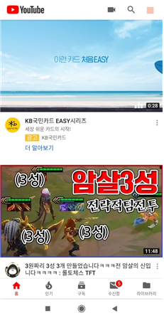
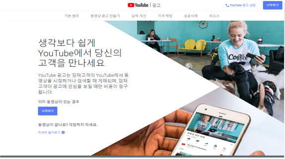
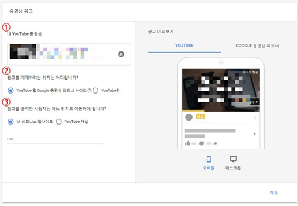
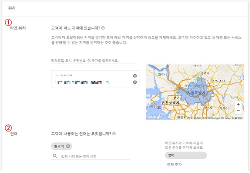
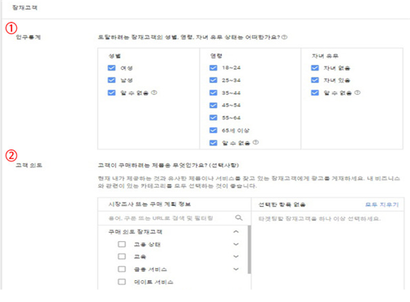
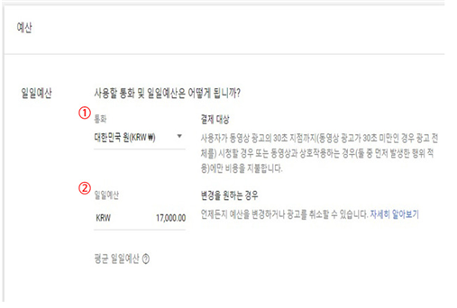
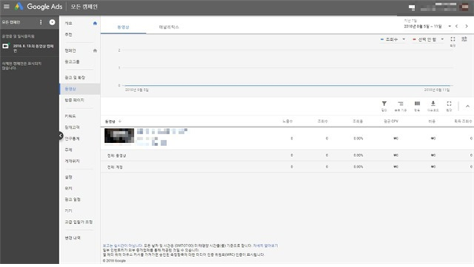

YouTube 광고 등록하기
유튜브에는 많은 광고 상품이 있지만,사용자들이 가장 많이 사용하는 광고로는 크게 두 가지로 보입니다.
첫 번째는 검색 결과 상단에 노출 되는 것으로,광고주가 특정 키워드를 정하고 입찰가를 입력하면 광고가 노출이 됩니다.
네이버에 비해서 주목도가 높은 반면,홈페이지로 바로 이동하는 것이 아니라 동영상 콘텐츠로서 고객을 유입시켜
직접적인 홈페이지 방문 수에는 영향을 주지 않습니다.

두 번째는,콘텐츠 앞에 노출되는 광고로, 사용자가 특정 시간 이후에 스킵을 하지 않고 먼저 스킵 하게 되면 광고비가 소진되지 않습니다.
이 방법을 CPV라고 부르며,위의 방법과는 달리 바로 갈 수 있는 링크를 넣을 수 있습니다.즉,사용자를 홈페이지에 직접 유입시킬 수 있습니다.

먼저 유튜브 홈페이지 왼쪽 하단의 광고 메뉴를 클릭하고 광고 등록을 시작합니다.

1. 동영상 광고 등록
유튜브에 등록된 광고용 동영상 주소를 입력한 후,광고 게재 유형 선택과 광고 클릭 시 이동할 웹사이트 주소 또는 유튜브 채널 주소를 입력합니다.
2. 위치 및 언어 설정
광고용 동영상을 노출하고 싶은 지역과 언어를 선택합니다.
3. 잠재 고객 설정
동영상을 검색하는 고객의 성별, 연령, 자녀의 유무 상태와 고객이 관심을 갖는 제품 또는 서비스를 설정합니다.
4. 예산 설정


일일 광고료로 쓸 예산 설정을 합니다. CPC 또는 CPV
5. 타켓팅 설정 및 경매 입찰
구글 애드워즈 시스템에 접속하여 등록된 동영상 내 인구 통계 외 정밀 키워드,카테고리,게재위치 등을 설정하고 가격을 설정합니다.

